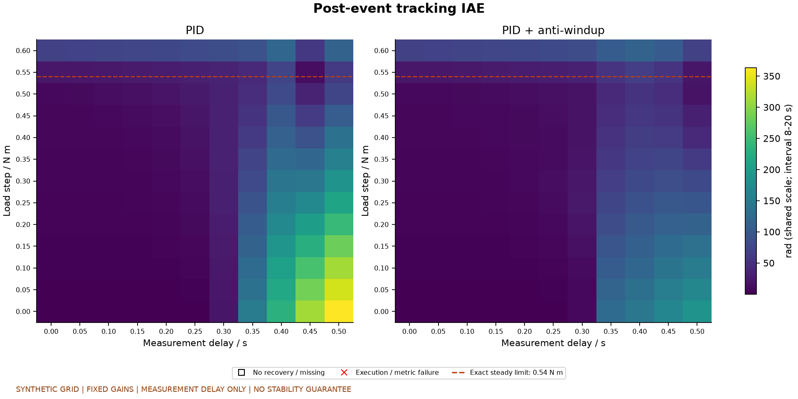
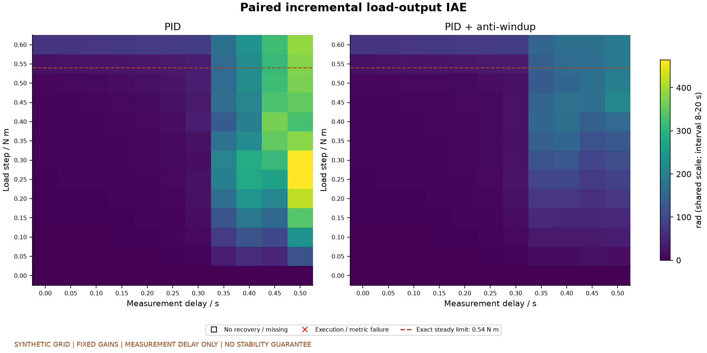
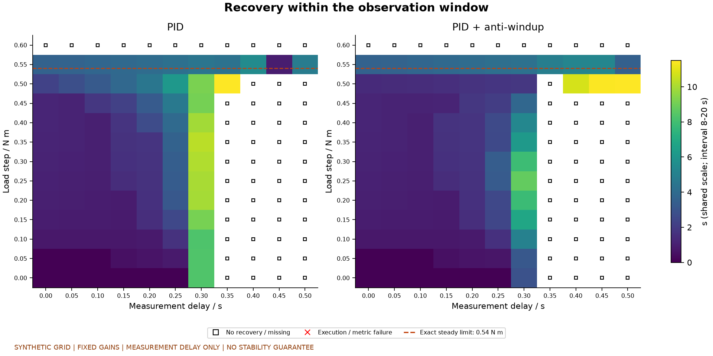
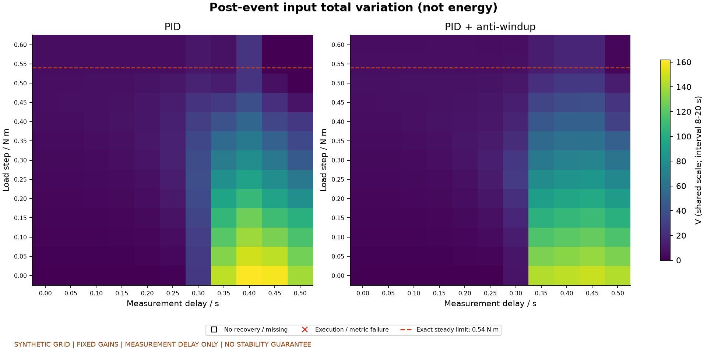
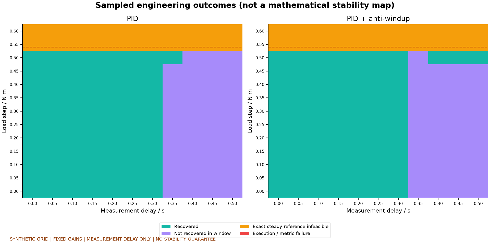
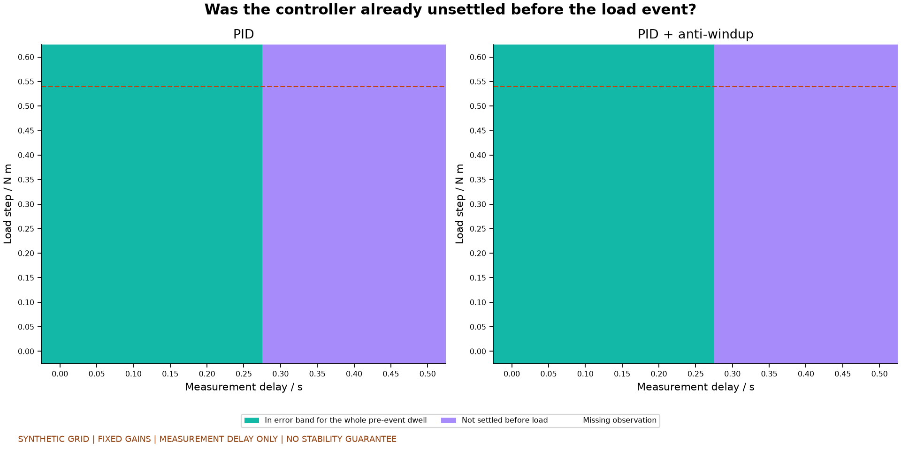
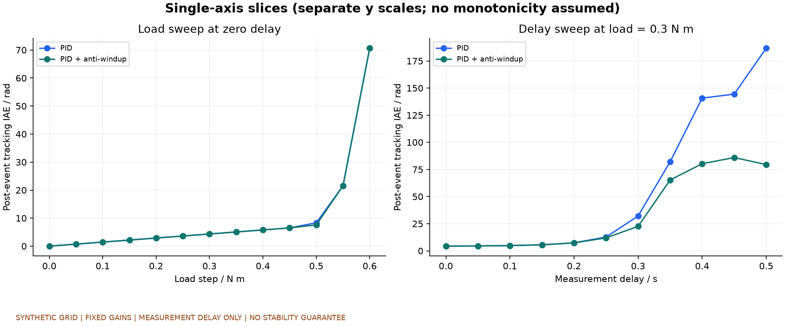
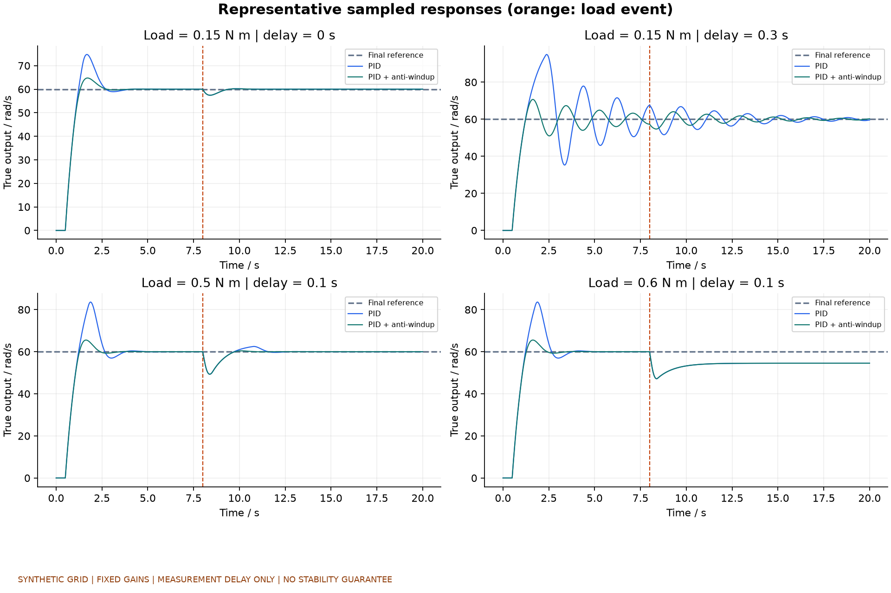

合成网格，固定电机参数及PID增益，未经硬件验证。每次重新创建并复位；没有随机重复或概率权重。
记录286次，运行/指标失败0次。评价区间[8.0,20.0) s。延迟仅作用于测量，负载阶跃作用于对象。
原始跟踪误差、同延迟零负载对照的输出增量积分分别解释。事件前未安定单独标记，负载幅值0的增量指标为0。
分类：恢复 / 观察窗内未恢复 / 精确稳态参考不可达 / 执行或指标失败。不可达不是不稳定，未恢复不是稳定性定理。标称60 rad/s和±12 V下精确稳态负载上限为0.54 N m；恢复误差带与这一精确可达性条件不同。
热力图格子仅代表采样点，不保证格间表现。不给出单一精确临界延迟，不将采样点比例当成现实失效概率。
实验计划 · 逐次指标 · 配置及逐次文件索引 · 权威完成状态
| controller_name | sampled_points | recovered | not_recovered_in_window | steady_reference_infeasible | execution_or_metric_failure | pre_event_not_settled | pre_event_unknown |
|---|---|---|---|---|---|---|---|
| pid | 143 | 78 | 43 | 22 | 0 | 65 | 0 |
| pid_antiwindup | 143 | 80 | 41 | 22 | 0 | 65 | 0 |







